"Practice" is now available at Nearpeer!
Create a custom quiz from the topic of your own choice and invite friends to compete with them Live! Try now. Guess what? It's free for everyone.

Create a custom quiz from the topic of your own choice and invite friends to compete with them Live! Try now. Guess what? It's free for everyone.